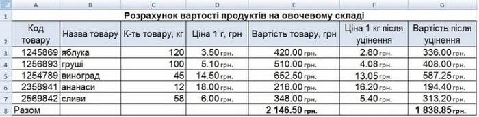

Вправа 3. Розрахунок вартості продуктів після уцінення
Розрахуйте вартість продуктів на овочевому складі після уцінення. Скориставшись таблицею, створеною під час виконання вправи 2.1, розрахуйте за допомогою формул ціну 1 кг кожного товару після уцінення, а також їх загальну вартість після уцінення. Якщо певного товару залишилося менше ніж 75 кг, його потрібно уцінити на 10 %, інакше — на 20 %.
- Відкрийте файл Bnpaвa_2_1.xlsx і одразу збережіть його під ім'ям Bnpaвa_3_1.xlsx.
- Додайте до таблиці справа стовпці Ціна 1 кг після уцінення та Вартість після уцінення (рис. 3.8). Задайте для їх клітинок грошовий формат.
- Виділіть клітинку FЗ, уведіть до неї формулу обчислення ціни 1 кг після уцінення. Обчислення в цій клітинці здійснюватимуться за таким принципом: якщо вага товару (клітинка СЗ) менше 75 кг, слід помножити початкову ціну (клітинка D3) на коефіцієнт 0,9, інакше — на 0,8. Отже, формула у клітинці F3 буде такою: =ІF(СЗ<75;D3*0,9;D3*0,8). Скопіюйте формулу до клітинок F4:F7.
- Обчисліть нову вартість товару з урахуванням уцінення. Вона дорівнює новій ціні 1 кг товару, помноженій на його кількість. Таким чином, у клітинку GЗ введіть формулу =СЗ*ЕЗ. Скопіюйте цю формулу до клітинок G4:G7.
- Обчисліть загальну вартість уціненого товару: за допомогою кнопки
 (Автосума) групи Редагування вкладки Основне уведіть до клітинки формулу =SUМ(G3:G7). Таблиця має набути такого вигляду, як на рис. 3.8. Збережіть документ.
(Автосума) групи Редагування вкладки Основне уведіть до клітинки формулу =SUМ(G3:G7). Таблиця має набути такого вигляду, як на рис. 3.8. Збережіть документ. - У клітинках D8 і F8 самостійно обчисліть середню ціну товару до та після уцінення. Доберіть для цього відповідну статистичну функцію.

Рис. 3.8. Вартість продуктів на овочевому складі до і після уцінення
Рис. 3.8. Вартість продуктів на овочевому складі до і після уцінення